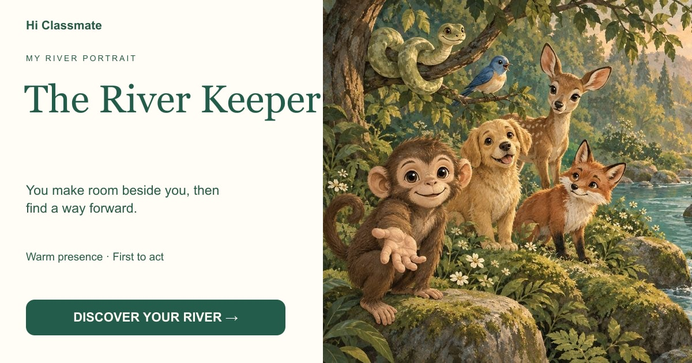

The River Keeper
You make room beside you, then find a way forward.

Your choices leaned toward shared closeness and taking the first step. You may be the person who turns “I am here” into something others can feel.
Begin my crossing →You make room beside you, then find a way forward.

Your choices leaned toward shared closeness and taking the first step. You may be the person who turns “I am here” into something others can feel.
Begin my crossing →